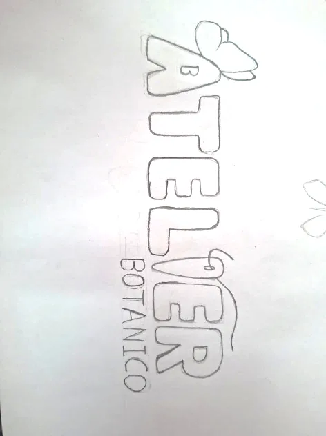
Boceto 01
Mariposa y aguja en la tipografía
Incluía una mariposa en la letra A y una i con forma de aguja. Se descartó por resultar demasiado simple y no transmitir suficientemente el valor artístico del taller.
El imagotipo está formado por el símbolo de mariposa y aguja y el logotipo tipográfico ATELIER. Ambos pueden usarse juntos o por separado, según el espacio y la aplicación, sin alterar sus proporciones ni su identidad.

La aguja central representa el trabajo textil y artesanal. Las alas de mariposa evocan la biodiversidad de la Selva Central, la ligereza, la transformación y el ecodiseño.
El símbolo y el nombre pueden utilizarse juntos o, cuando la aplicación lo permita, por separado.
Ver reglas de uso ↗El proceso se organizó en tres bocetos: cada uno exploró una relación distinta entre la aguja, las alas y las letras. La selección final prioriza la lectura del nombre, el equilibrio y la conexión con el arte textil.

Incluía una mariposa en la letra A y una i con forma de aguja. Se descartó por resultar demasiado simple y no transmitir suficientemente el valor artístico del taller.
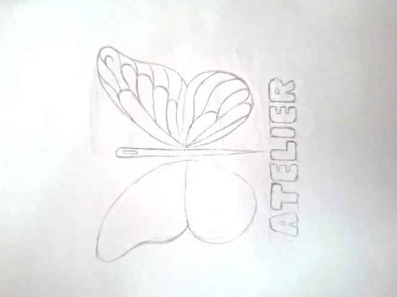
Exploró una aguja central y alas de mariposa con un tratamiento desigual. Se rechazó porque la lectura del texto era incómoda y la composición no se veía equilibrada.
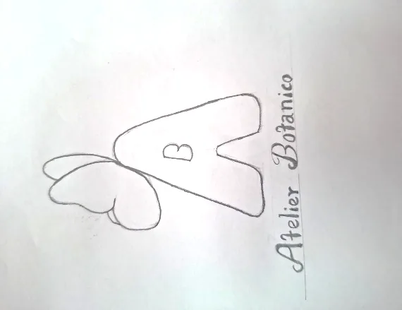
Reducía la identidad a la letra A y una mariposa. Se descartó porque restaba presencia al nombre completo ATELIER.
La versión multicolor es la principal; las variantes apoyan aplicaciones técnicas y soportes específicos.
Versión principal sobre fondo claro.

Para fondos oscuros y contraste alto.
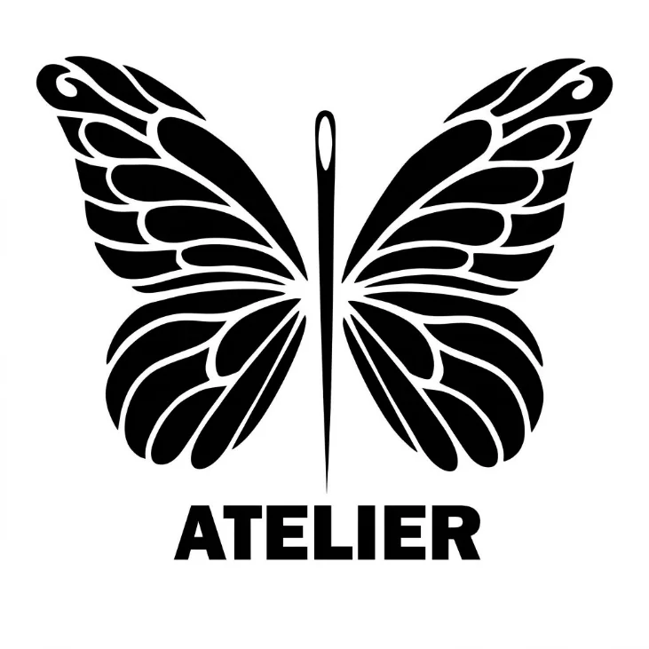
Para sellos, grabados y usos a una tinta.
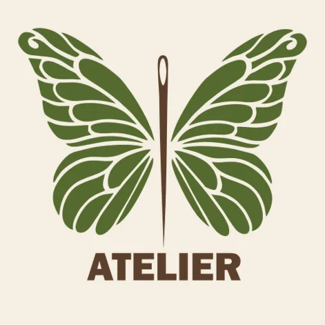
Para materiales reciclados y empaques kraft.
La paleta expresa biodiversidad, energía creativa y profesionalismo.
#3B50CF*#FD7C00*#089008*#FFE401*#F126F0*#77777D**Muestras digitales de referencia para esta web; confirmar los valores finales con el archivo maestro del logotipo antes de imprimir.
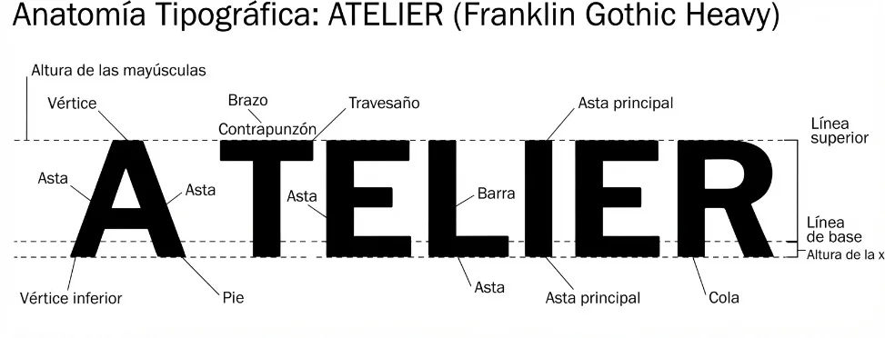
La documentación identifica Franklin Gothic Heavy para el nombre ATELIER y Franklin Gothic Medium para el eslogan. El contraste busca combinar presencia, legibilidad y delicadeza visual.
“Arte textil que florece con la naturaleza.”
Positivo, bicolor, eco-line, multicolor y negativo. Toca una imagen para ampliarla.
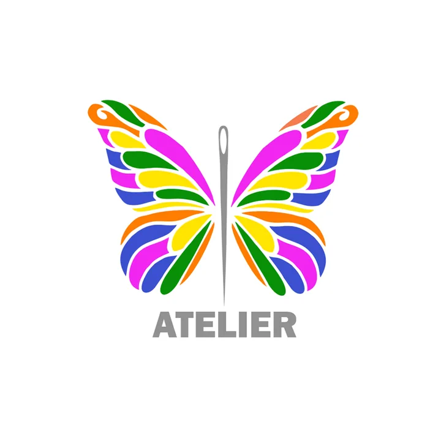
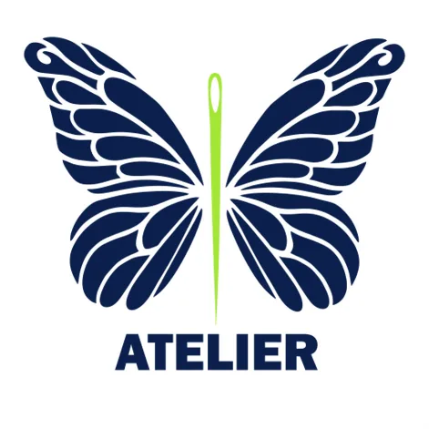
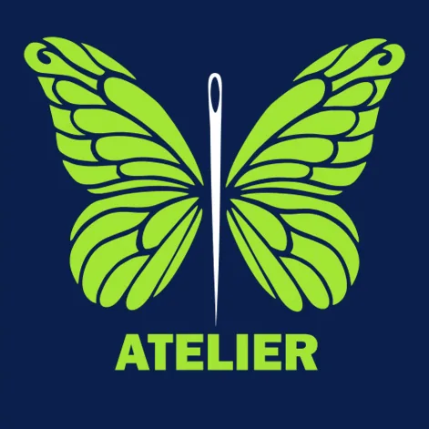
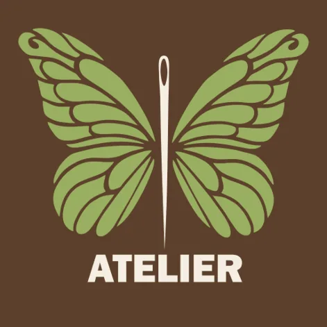
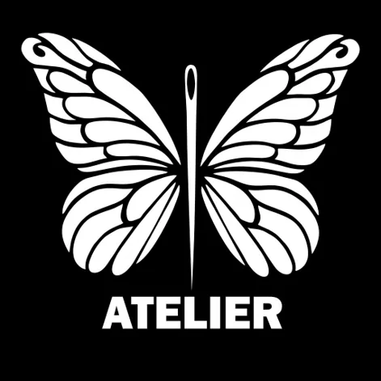

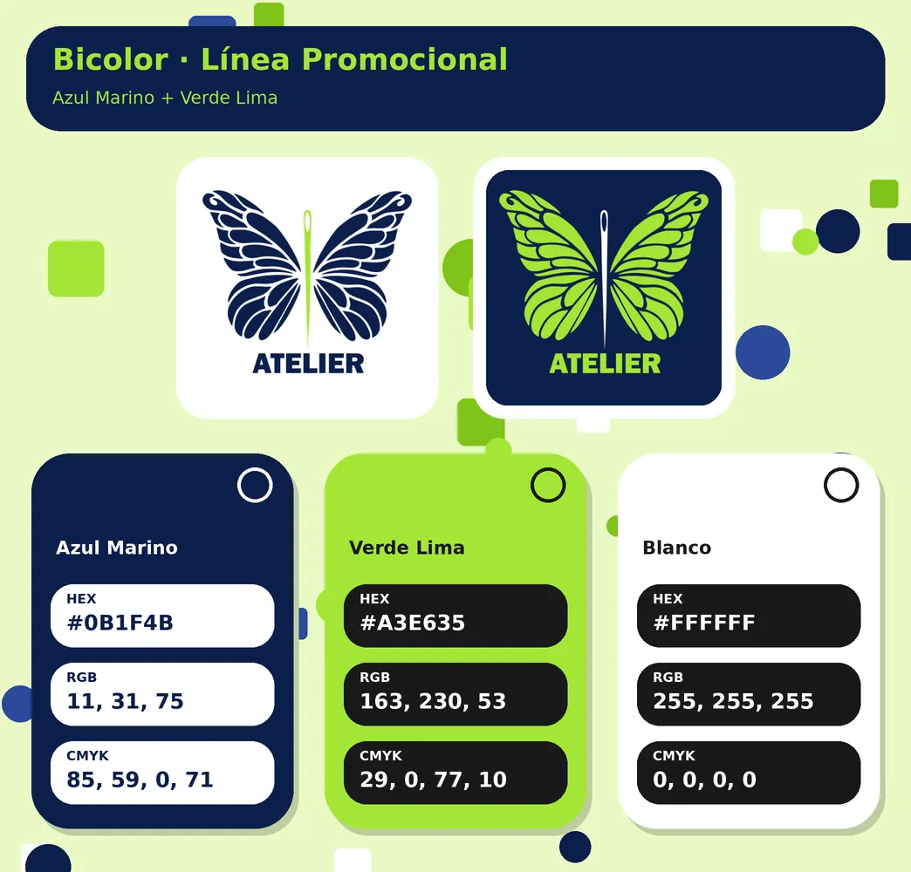
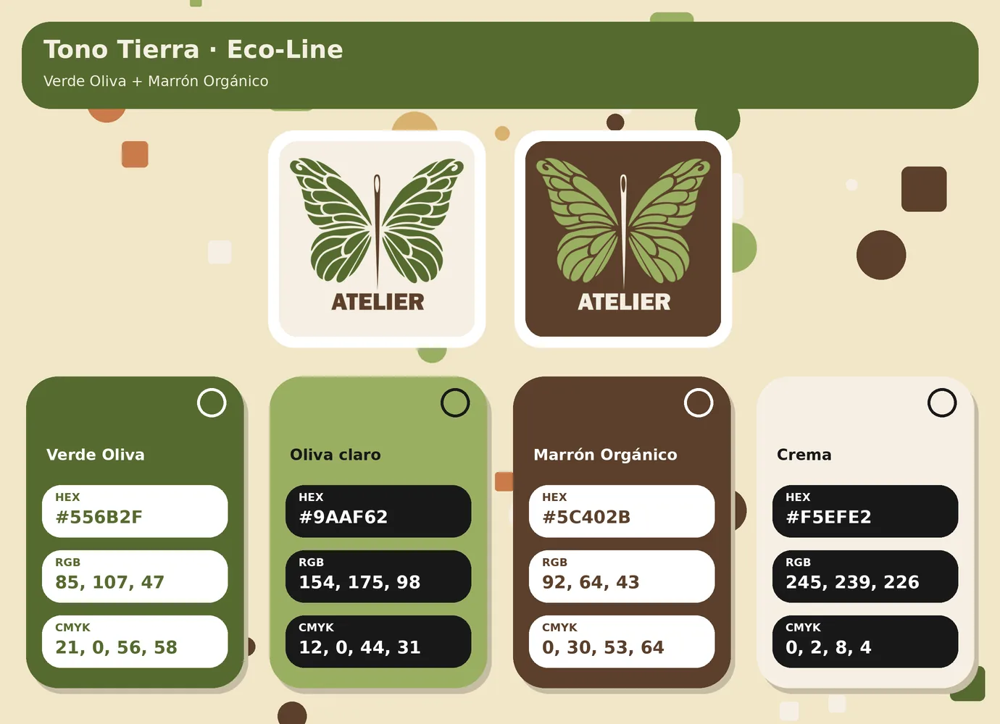
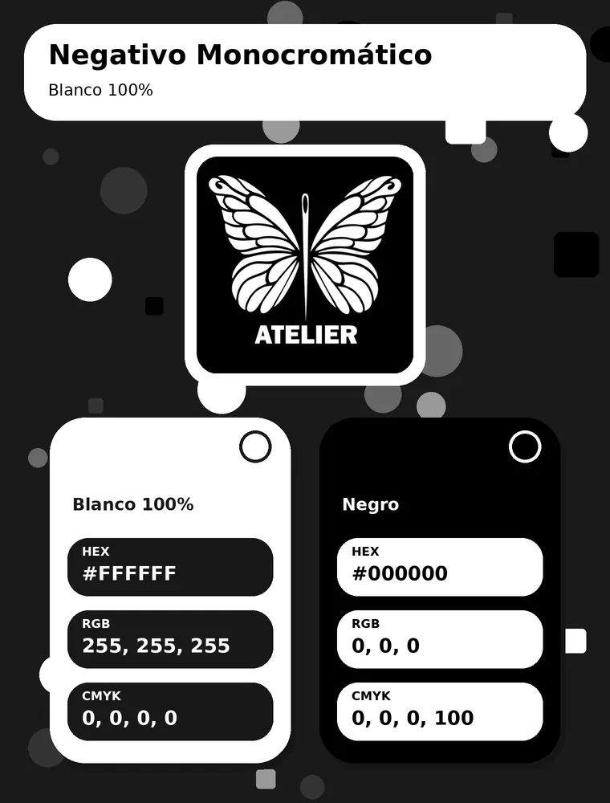
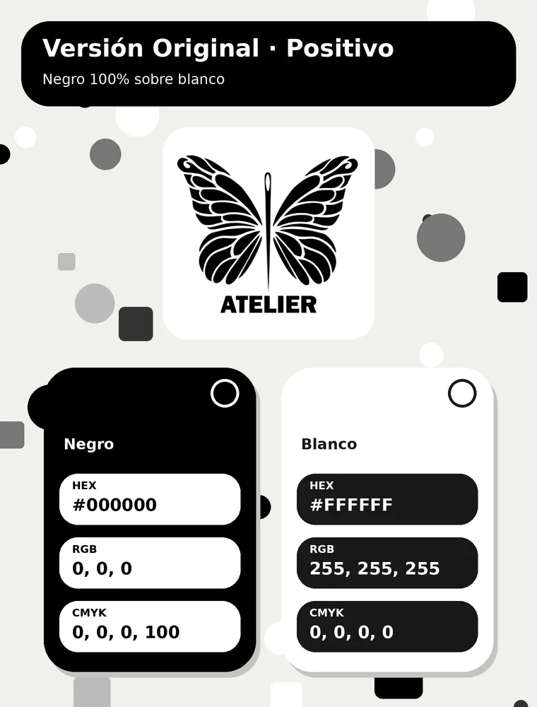